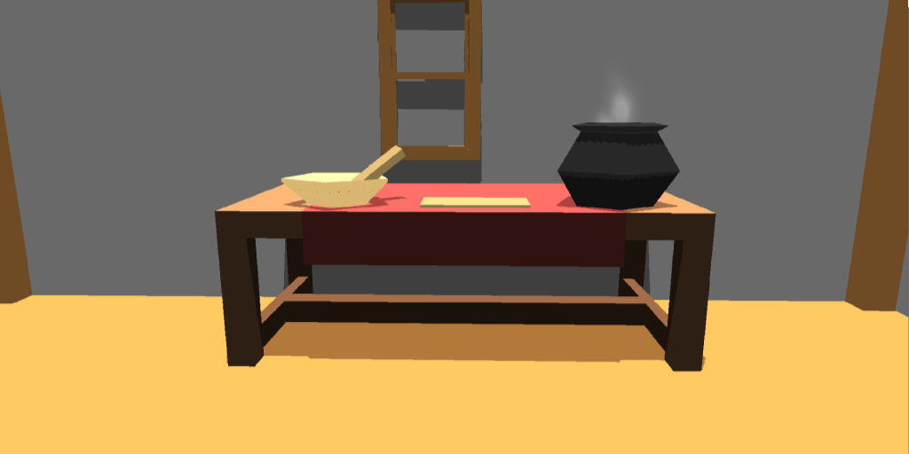

このゲームは素材を集めてポーションを作り、それを売ってお金を稼いでいくゲームです。
まずは外に出て素材を集めましょう。
ドアの前でFキーを押すと外に出られます。
外に出たら素材採集の為に歩き回りましょう。
素材に近づいてFキーで回収できます。
素材を集めたらメニューを開き、帰りましょう。
メニューはEscキーで開きます。
また、メニューの「素材」を選択すると採集した素材を見ることができます。
家に帰ったらクラフトテーブルでポーションを作りましょう。
クラフトテーブルの前でFキーを押してポーション制作を開始します。

素材と加工方法を選択してポーションを制作しましょう。
選択した素材は選択した数だけ消費されます。
また、素材と加工方法にはコストが設定されており、最大コストを超える素材、加工方法は選択することができません。
加工方法も複数選べますが、素材よりもコストが高いので慎重に選びましょう。
ポーションの効能は左下の棒グラフによって決まります。
左から筋力、防御、魔力、速さ、運のパラメーターになっています。
「調合」ボタンを押してポーションを調合しましょう。
単価はポーションの効能によって決まります。
ポーションが完成したら売るポーションを選びましょう。
棚の前でFキーを押してポーション管理画面を出します。
管理画面ではポーションを売るか捨てるかを選ぶことができ、確定ボタンを押して売るポーション、捨てるポーションを決定します。
ポーションはその週の需要によって何が売れるか変動するので、メニューの新聞から情報を得ましょう。
ポーション管理が終わったらポーションを売りましょう。
再びドアの前に行き、Fキーを押すとポーションを売りに行けます。
売り上げはポーション単価と売れた個数で決まります。